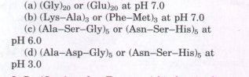
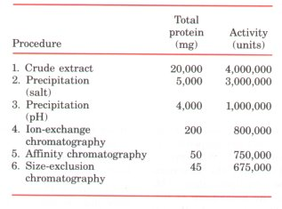
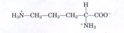
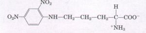
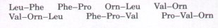

Cells generally contain thousands of different proteins, each with a different function or biological activity. These functions include enzymatic catalysis, molecular transport, nutrition, cell or organismal motility, structural roles, organismal defense, regulation, and many others. Proteins consist of very long polypeptide chains having from 100 to over 2,000 amino acid residues joined by peptide linkages. Some proteins have several polypeptide chains, which are then referred to as subunits. Simple proteins yield only amino acids on hydrolysis; conjugated proteins contain in addition some other component, such as a metal ion or organic prosthetic group.
Proteins are purified by taking advantage of properties in which they differ, such as size, shape, binding affmities, charge, etc. Purification also requires a method for quantifying or assaying a particular protein in the presence of others. Proteins can be both separated and visualized by electrophoretic methods. Antibodies that specifically bind a certain protein can be used to detect and locate that protein in a solution, a gel, or even in the interior of a cell.
All proteins are made from the same set of 20 amino acids. Their differences in function result from differences in the composition and sequence of their amino acids. The amino acid sequences of polypeptide chains can be established by fragmenting them into smaller pieces using several specific reagents, and determining the amino acid sequence of each fragment by the Edman degradation procedure. The sequencing of suitably sized peptide fragments has been automated. The peptide fragments are then placed in the correct order by finding sequence overlaps between fragments generated by different methods. Protein sequences can also be deduced from the nucleotide sequence of the corresponding gene in the DNA. The amino acid sequence can be compared with the thousands of known sequences, often revealing insights into the structure, function, cellular location, and evolution of the protein.
Homologous proteins from different species show sequence homology: certain positions in the polypeptide chains contain the same amino acids, regardless of the species. In other positions the amino acids may differ. The invariant residues are evidently essential to the function of the protein. The degree of similarity between amino acid sequences of homologous proteins from different species correlates with the evolutionary relationship of the species.
See Chapter 5 for additional useful references.
Properties of Proteins
Creighton, T.E. (1984) Proteins: Structures and Molecular Properties, W.H. Freeman and Company, New York.
Dickerson, R.E. & Geis, I. (1983) Proteins: Structure, Function, and Euolution, 2nd edn, The Benjamin/Cummings Publishing Company, Menlo Park, CA.
A beautifully illustrated introduction to proteins.
Doolittle, R.F. (1985) Proteins. Sci. Am. 253 (October), 88-99.
An overview that highlights euolutionary relationships.
Srinavasan, P.R., Fruton, J.S., & Edsall, J.T. (eds) (1979) The Origins of Modern Biochemistry:
A Retrospect on Proteins. Ann. N.Y. Acad. Sci. 325.
A collection of uery interesting articles on the history of protein research.
Structure and Function of Proteins. (1989) Trends Biochem. Sci. 14 (July).
A special issue devoted to reuiews on protein chemistry and protein structure.
Working with Proteins
Hirs, C.H.W. & Timasheff, S.N. (eds) (1983) Methods in Enzymology, Vol. 91, Part I: Enzyme Structure, Academic Press, Inc., New York.
An excellent collection of authoritatiue articles on techniques in protein chemistry. Includes information on sequencing.
Kornberg, A. (1990) Why purify enzymes? In Methods in Enzymology, Vol. 182: Guide to Protein Purification (Deutscher, M.P., ed), pp. 1-5, Academic Press, Inc., New York.
The critical role of classicczl biochemical methods in a new age.
O'Farrell, P.H. (1975) High resolution two-dimensional electrophoresis of proteins. J. Biol. Chem. 250, 4007-4021.
An interesting attempt to count ull the proteins in the E. coli cell.
Plummer, David T. (1987) An Introduction to Practical Biochemistry, 3rd edn, McGraw-Hill, London.
Good descriptions of many techniques for beginning students.
Scopes, R.K. (1987) Protein Purification: Principles and Practice, 2nd edn, Springer-Verlag, New York.
Tonegawa, S. (1985) The molecules of the immune system. Sci. Am. 253 (October), 122-131.
The Coualent Structure of Proteins
Dickerson, R.E. (1972) The structure and history of an ancient protein. Sci. Am. 226 (April), 58-72.
A nice summary of information gleaned from interspecies comparisons of cytochrome c sequences.
Doolittle, R. (1981) Similar amino acid sequences: chance or common ancestry? Science 214, 149-159.
A good discussion of what can be learned by comparing amino acid sequences.
Hunkapiller, M.W., Strickler, J.E., & Wilson, K.J. (1984) Contemporary methodology for protein structure determination. Science 226, 304-311.
Reidhaar-Olson, J.F. & Sauer, R.T. (1988) Combinatorial cassette mutagenesis as a probe of the informational content of protein sequences. Science 241, 53-57.
A systematic study of possible amino acid substitutions in a short segment of one protein.
Wilson, A.C. (1985) The molecular basis of evolution. Sci. Am. 253 (October), 164-173.
1. How Many β-Galactosidase Molecules Are Present in an E. coli Cell? E. coli is a rod-shaped bacterium 2 μm long and 1 μm in diameter. When grown on lactose (a sugar found in milk), the bacterium synthesizes the enzyme β-galactosidase (M,. 450,000), which catalyzes the breakdown of lactose. The average density of the bacterial cell is 1.2 g/mL, and 14% of its total mass is soluble protein, of which l.O% is β-galactosidase. Calculate the number of β-galactosidase molecules in an E. coli cell grown on lactose.
2. The Number of Tryptophan Residues in Bouine Serum Albumin A quantitative amino acid analysis reveals that bovine serum albumin contains 0.58`% by weight of tryptophan, which has a molecular weight of 204.
(a) Calculate the minimum molecular weight of bovine serum albumin (i.e., assuming there is only one tryptophan residue per protein molecule).
(b) Gel filtration of bovine serum albumin gives a molecular weight estimate of about 70,000. How many tryptophan residues are present in a molecule of serum albumin?
3. The Molecular Weight of Ribonuclease Lysine makes up 10.5% of the weight of ribonuclease. Calculate the minimum molecular weight of ribonuclease. The ribonuclease molecule contains ten lysine residues. Calculate the molecular weight of ribonuclease.
4. The Size of Proteins What is the approximate molecular weight of a protein containing 682 amino acids in a single polypeptide chain?
5. Net Electric Charge of Peptides A peptide isolated from the brain has the sequence
Glu-His-Trp-Ser-Tyr-Gly-Leu-Arg-Pro-Gly
Determine the net charge on the molecule at pH 3. What is the net charge at pH 5.5? At pH 8? At pH 11? Estimate the pI for this peptide. (Use pKa values for side chains and terminal amino and carboxyl groups as given in Table 5-1.)
6. The Isoelectric Point of Pepsin Pepsin of gastric juice (pH≈1.5) has a pI of about 1, much lower than that of other proteins (see Table 6-5). What functional groups must be present in relatively large numbers to give pepsin such a low pI? What amino acids can contribute such groups?
7. The Isoelectric Point of Histones Histones are proteins of eukaryotic cell nuclei. They are tightly bound to deoxyribonucleic acid (DNA), which has many phosphate groups. The pI of histones is very high, about 10.8. What amino acids must be present in relatively large numbers in histones? In what way do these residues contribute to the strong binding of histones to DNA?
8. Solubility o f Polypeptides One method for separating polypeptides makes use of their differential solubilities. The solubility of large polypeptides in water depends upon the relative polarity of their R groups, particularly on the number of ionized groups: the more ionized groups there are, the more soluble the polypeptide. Which of each pair of polypeptides below is more soluble at the indicated pH?


9. Purification of an Enzyme A biochemist discovers and purifies a new enzyme, generating the purification table below:(a) From the information given in the table, calculate the specific activity of the enzyme solution after each purification procedure.
(b) Which of the purification procedures used for this enzyme is most effective (i.e., gives the greatest increase in purity)?
(c) Which of the purification procedures is least effective?
(d) Is there any indication in this table that the enzyme is now pure? What else could be done to estimate the purity of the enzyme preparation?
10. Fragmentation n f a Polypeptide Chain by Proteolytic Enzymes Trypsin and chymotrypsin are specific enzymes that catalyze the hydrolysis of polypeptides at specific locations (Table 6-7). The sequence of the B chain of insulin is shown below. Note that the cystine cross-linkage between the A and B chains has been cleaved through the action of performic acid (see Fig. 6-12).
Phe - Val - Asn - Gln - His - Leu - CysSO3- - Gly - Ser - His - Leu - Val - Glu - Ala - Leu - Tyr - Leu - Val - CysSO3- - Gly - Glu - Arg - Gly - Phe - Phe - Tyr - Thr - Pro - Lys - Ala
Indicate the points in the B chain that are cleaved by (a) trypsin and (b) chymotrypsin. Note that these proteases will not remove single amino acids from either end of a polypeptide chain.
11. Sequence Determination of the Brain Peptide Leucine Enkephalin A group of peptides that influence nerve transmission in certain parts of the brain has been isolated from normal brain tissue. These peptides are known as opioids, because they bind to specific receptors that bind opiate drugs, such as morphine and naloxone. Opioids thus mimic some of the properties of opiates. Some researchers consider these peptides to be the brain's own pain killers. Using the information below, determine the amino acid sequence of the opioid leucine enkephalin. Explain how your structure is consistent with each piece of information.
(a) Complete hydrolysis by 1 M HCI at 110 °C followed by amino acid analysis indicated the presence of Gly, Leu, Phe, and Tyr, in a 2:1:1:1 molar ratio.
(b) Ti-eatment of the peptide with 1-fluoro-2,4dinitrobenzene followed by complete hydrolysis and chromatography indicated the presence of the 2,4-dinitrophenyl derivative of tyrosine. No free tyrosine could be found.
(c) Complete digestion of the peptide with pepsin followed by chromatography yielded a dipeptide containing Phe and Leu, plus a tripeptide containing Tyr and Gly in a 1:2 ratio.
12. Structure of a Peptide Antibiotic from Bacillus brevis Extracts from the bacterium Bacillus breois contain a peptide with antibiotic properties. Such peptide antibiotics form complexes with metal ions and apparently disrupt ion transport across the cell membrane, killing certain bacterial species. The structure of the peptide has been determined from the following observations.
(a) Complete acid hydrolysis of the peptide followed by amino acid analysis yielded equimolar amounts of Leu, Orn, Phe, Pro, and Val. Orn is ornithine, an amino acid not present in proteins but present in some peptides. It has the structure

(b) The molecular weight of the peptide was estimated as about 1,200.
(c) When treated with the enzyme carboxypeptidase, the peptide failed to undergo hydrolysis.
(d) Treatment of the intact peptide with 1fluoro-2,4-dinitrobenzene, followed by complete hydrolysis and chromatography, yielded only free amino acids and the following derivative:

(Hint: Note that the 2,4-dinitrophenyl derivative involves the amino group of a side chain rather than the a-amino group.)
(e) Partial hydrolysis of the peptide followed by chromatographic separation and sequence analysis yielded the di- and tripeptides below (the amino-terminal amino acid is always at the left):
Given the above information, deduce the amino acid sequence of the peptide antibiotic. Show your reasoning. When you have arrived at a structure, go back and demonstrate that it is consistent with eccch experimental observation.